모델과 노력, 두 개의 다이얼
모델과 노력 단계를 매번 같은 값으로 두면 둘 중 하나가 생겨요. 간단한 일에 돈을 더 내거나, 어려운 일에서 품질을 놓치거나요. 발표자는 그래서 일을 시작할 때마다 두 다이얼을 따로 맞춰 보라고 해요. 기준은 Anthropic이 직접 낸 가이드와 문서예요.
왼쪽 다이얼에는 Haiku, Sonnet, Opus, Fable 네 모델이 붙어 있고, 아래에 '무엇을 아는지(what it knows)'라고 적혀 있어요. 오른쪽 다이얼이 노력 단계예요.
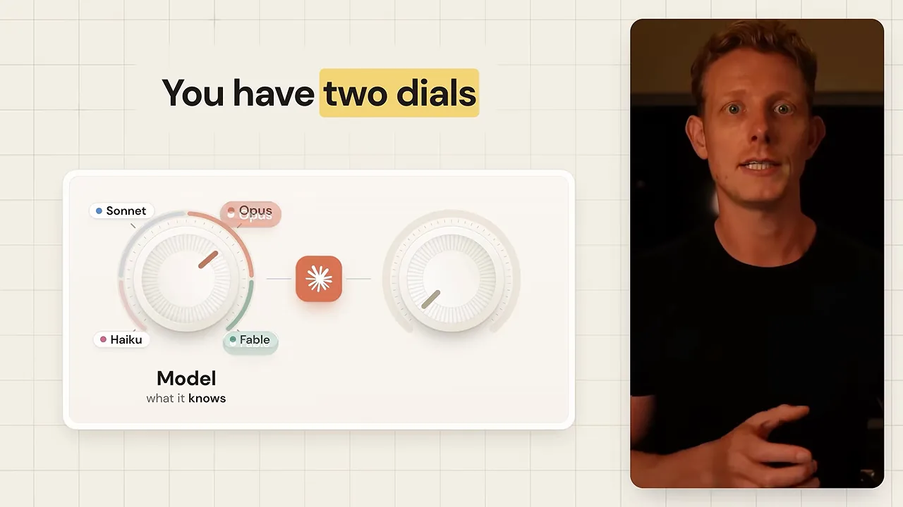
모델은 분야가 아니라 아는 양으로 갈려요
Haiku는 이런 일, Opus는 저런 일처럼 모델마다 전문 분야가 있다고 생각하기 쉬워요. Anthropic은 그렇지 않다고 해요. 모든 모델이 코딩, 에이전트 작업, 지식 업무를 잘하도록 훈련됐고, 큰 모델일수록 더 많이 알 뿐이에요. 화면에 띄운 공식 글의 노란 부분이 그 차이를 말해요. Fable 같은 큰 모델은 벤치마크 점수가 Opus와 비슷해도 지혜, 창의성, 글솜씨가 더 낫다는 거예요.
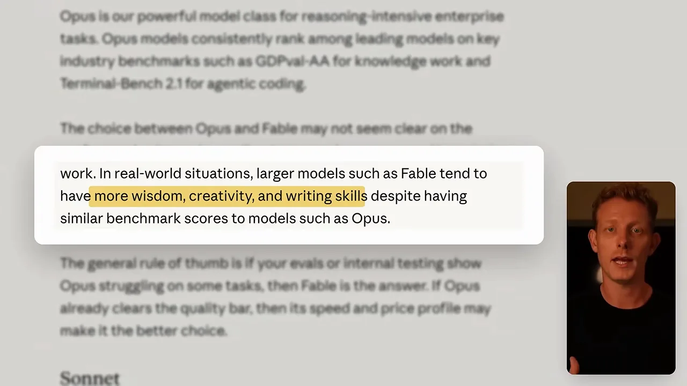
노력은 다섯 단계, 하지만 지식을 늘리진 못해요
노력은 low, medium, high, extra high(xhigh), max 다섯 단계예요. 높을수록 Claude가 더 많이 읽고, 더 많이 테스트하고, 더 많은 결정을 혼자 내려요. 그만큼 오래 걸리고 비싸져요. 어느 모델이든 마찬가지예요.
중요한 건 두 다이얼이 서로를 대신하지 못한다는 점이에요. 아래 문서의 강조 부분이 그걸 못 박아요. 노력을 올려도 모델에 없는 지식이나 기술은 생기지 않고, 그럴 땐 모델을 올려야 한다고요. Sonnet을 max로 돌려도 Opus가 아는 만큼은 몰라요.
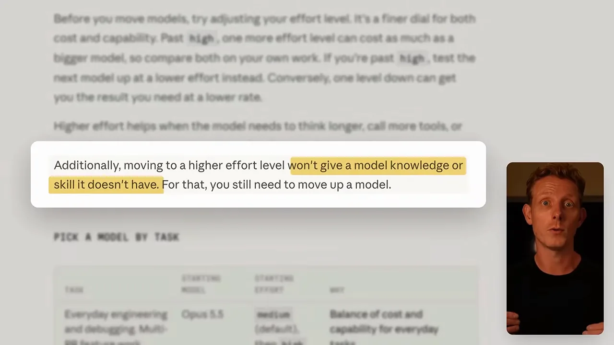
영상이 이어서 설명하는 네 모델을 한 표로 먼저 보면 이래요.
| 모델 | 이럴 때 | 영상의 예 | 주의할 점 |
|---|---|---|---|
| Haiku | 단순·반복·검증이 쉬운 일 | 대량 요약, 분류, 라우팅, 읽기용 서브에이전트 | 스스로 판단할 일에는 약해요 |
| Sonnet | '완료'를 한 문장으로 말할 수 있는 일 | 통화 녹취로 제안서 템플릿 채우기, 주간 보고서 | 토큰 단가는 Opus의 절반 |
| Opus | 대부분의 일, 어려울지 모를 때 | 발표 자료 숫자를 원본 시트와 대조하기 | Claude Code 기본 모델 |
| Fable | 열린 문제, 판단과 정확도가 중요할 때 | 1년 치 고객 통화로 이탈 원인 분석 | 토큰 단가는 Opus의 두 배 |
Haiku와 Sonnet — 싸고 빠른 쪽부터 떠올리기
Haiku: 단순하고, 반복되고, 확인하기 쉬운 일
Haiku는 가장 빠르고 싼 모델이에요. 발표자는 대부분이 이 모델을 아예 안 쓴다고 봐요. 하지만 단순한 일에서는 큰 모델과 거의 차이가 없어요. 화면의 표 한 줄이 그 기준이에요. 왼쪽 노란 칸이 '결과를 확인할 수 있는 대량 작업', 가운데가 'Haiku 5.5부터 써 보라'예요. 아래 두 꼬리표는 Anthropic이 꼽은 Haiku의 대표 용도인 요약과 분류예요.
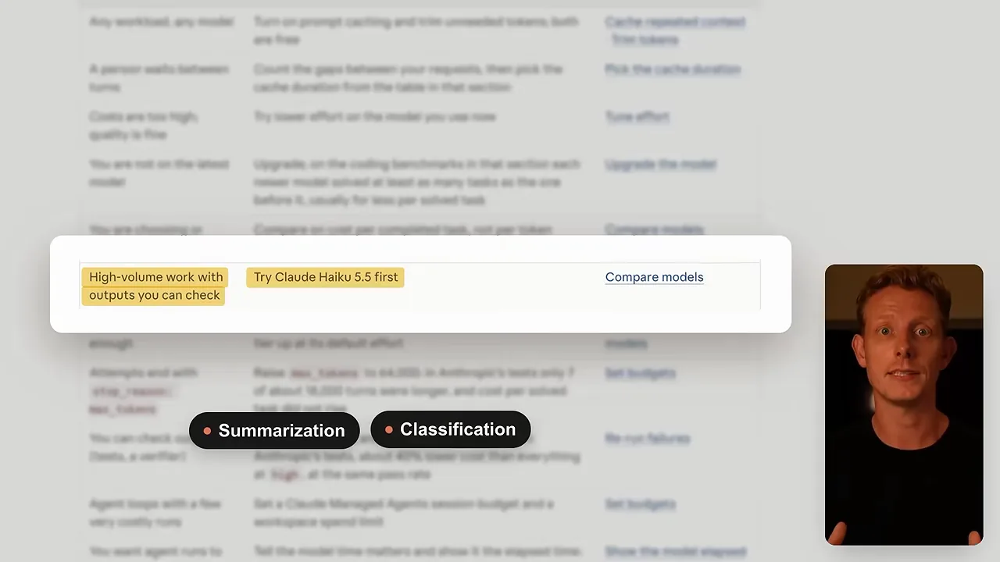
Anthropic 테스트에서 Haiku 5.5는 어려운 과학 퀴즈에서 85%를 맞혀 Opus의 91%에 조금 못 미쳤어요. 대신 정답 하나당 비용은 약 20분의 1이었어요. 서브에이전트에도 잘 맞아요. Claude가 띄우는 서브에이전트는 대부분 많이 읽고 메인 에이전트에게 요약해 주는 일이라서요.
약점은 판단이에요. 아래 그래프는 Anthropic의 결함 찾기 과제 결과예요. 세로축이 찾아낸 결함 점수(F1), 가로축이 비용이에요. 맨 아래 왼쪽 'Opus 5.5 with Haiku 5.5 subagents'가 $47에 0.677이에요. 같은 Opus에 Sonnet 서브에이전트를 붙인 0.831보다 거의 5분의 1 낮아요.

Sonnet: '완료'를 한 문장으로 말할 수 있다면
Sonnet은 두 번째로 싸고 빠른 모델이에요. 발표자는 가장 덜 쓰이는 모델이라고 봐요. 카드 아래 두 줄이 핵심이에요. 가격은 Opus의 절반이고, 판별 기준은 "'완료'가 한 문장에 들어가는가"예요. 일이 그만큼 분명하면 큰 모델의 추가 지식이 필요 없어요.
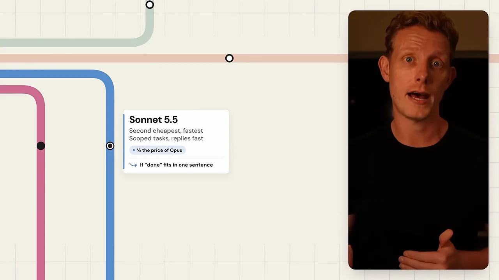
Anthropic 가이드도 반복하는 일에는 큰 모델이 거의 필요 없다고 해요. 아래 표의 셋째 줄이 그 문장이에요. '반복해서 돌리는 에이전트 작업(조사, 검토, 초안)'에 Sonnet 5.5 medium을 권하고, 이유로 '잘 정의된 반복 작업은 더 큰 모델이 거의 필요 없다'고 적었어요. 같은 표에서 문서·슬라이드·스프레드시트는 Sonnet 5.5 high(Claude Code에서는 medium), 컴퓨터 사용은 Opus 5.5, 큰 리팩터링과 설계는 Fable 5.2예요.
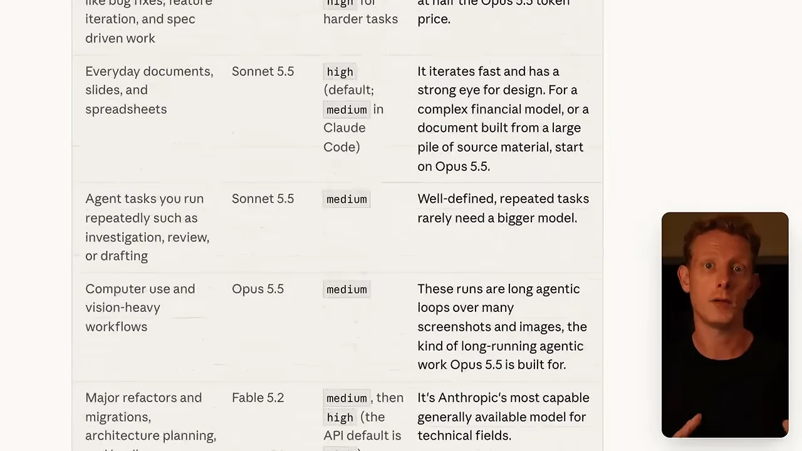
발표자가 드는 대표 예는 영업 통화를 제안서로 바꾸는 일이에요. 제안서 템플릿과 통화 녹취를 주면 Claude가 템플릿을 채워요. 구조는 정해져 있고 정보는 통화에 다 있으니 범위가 아주 분명해요. 자주 오는 메일 답장 초안, 기존 스프레드시트 채우기, 매주 같은 양식의 주간 보고서도 같은 부류예요.
스킬과 서브에이전트는 따로 모델을 정할 수 있어요
스킬도 대부분 정해진 흐름을 따라서 Sonnet으로 충분해요. 스킬 파일 맨 위에 model: sonnet 한 줄을 넣으면 그 스킬은 늘 Sonnet으로 돌고, 대화는 원래 모델로 남아요. 자주 쓰는 스킬의 비용을 줄이기 좋아요. 발표자 말로는 Claude Code에서만 되고, Cowork는 스킬에 모델 설정을 받지 않아요.
서브에이전트도 같아요. 아래 화면은 서브에이전트 정의 파일 머리말이에요. 이름(code-improver), 설명, 도구(Read, Grep, Glob) 아래에 노랗게 칠한 model: sonnet이 있어요. 읽고 보고만 하는 서브에이전트라 Sonnet이면 충분해요. Anthropic 엔지니어 한 명도 읽기 전용 서브에이전트는 Sonnet, 때로는 Haiku로 돌린다고 했대요.
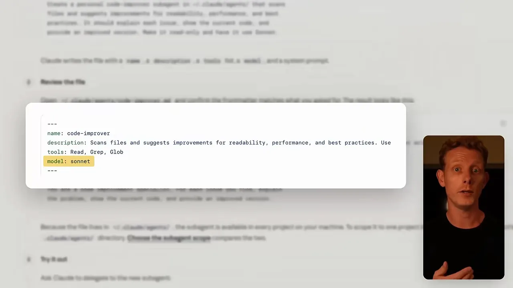
문제는 따로 말하지 않을 때예요. 아래 화면에서 Claude는 가격 조사를 서브에이전트 셋으로 나눴는데, 셋 다 오른쪽 노란 꼬리표가 'Opus 5.5'예요. 프롬프트에 "읽기 전용 서브에이전트는 Sonnet으로 돌려" 같은 한 줄이 없으면, 메인 대화와 같은 모델로 띄우거든요. 발표자는 작업에 따라 서브에이전트가 대화 전체 토큰의 90%까지 쓴다고 해요.
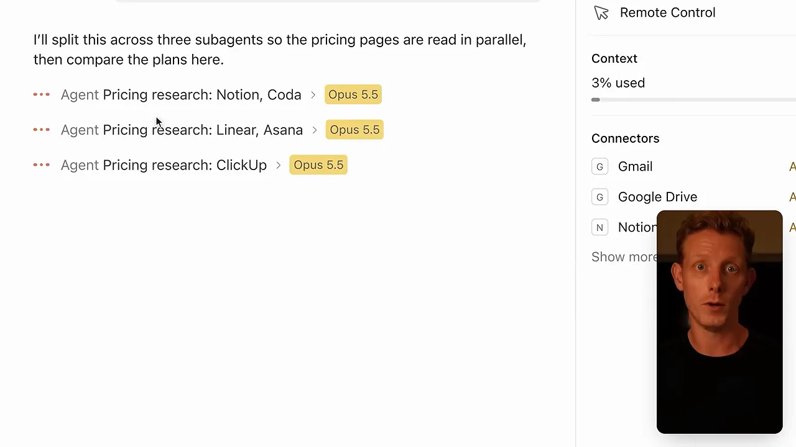
Opus와 Fable — 판단이 필요한 일
Opus: 잘 모르겠으면 여기서 시작
Opus는 Claude Code의 기본 모델이에요. 대부분의 일과, 일이 얼마나 어려울지 감이 안 올 때 쓰는 모델이에요. Anthropic은 '매일 타는 차(daily driver)'라고 불러요. Fable의 절반 가격으로 대부분의 일을 감당한다는 뜻이에요.
화면은 Anthropic이 낸 'Fable 5.2냐 Opus냐' 영상이에요. 오른쪽 모델 메뉴에서 Opus 5.5를 고르는 장면 아래로, 노랗게 칠한 문장이 보여요. "대부분은 Opus 5.5 medium이 답"이라는 말이에요. 리서치, 글쓰기, 분석 같은 지식 업무를 여기서 시작하라는 거예요.
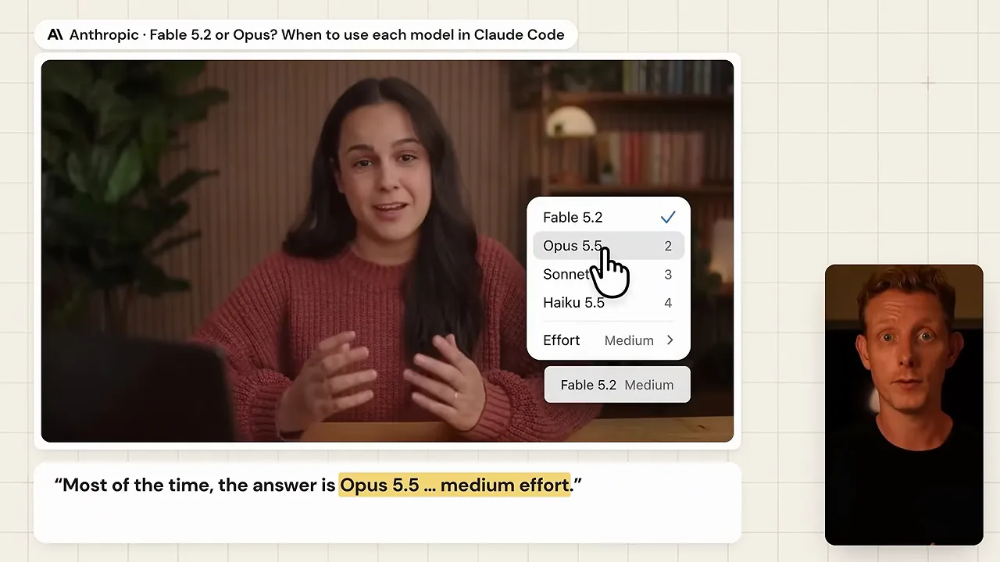
예로 든 일은 'Q3 고객 발표 자료 점검'이에요. 왼쪽 발표 자료의 매출 $4.2M, 이탈률 3.1%, NPS(Net Promoter Score) 46 같은 숫자를 오른쪽 원본 스프레드시트와 하나하나 대조하는 일이에요. 판단은 필요하지만 큰 일은 아니라서 Opus가 잘 해내요. 화면 위쪽 '난이도' 칸이 물음표인 것도 눈여겨볼 만해요. 시작할 때 난도를 모르는 일이라는 뜻이에요.
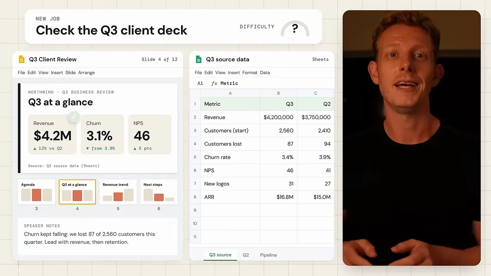
Opus는 좋은 오케스트레이터이기도 해요. 일을 나눠 범위가 정해진 부분을 싼 서브에이전트에 넘긴다는 뜻이에요. 앞 섹션의 그래프에서 'Opus 5.5 with Sonnet 5.5 subagents'가 이 경우예요. Anthropic 테스트에서 Opus 리더가 Sonnet 서브에이전트를 최대 25개 쓰자, Opus 혼자 할 때보다 비용은 약 3분의 1 줄고 점수는 비슷했어요.
Fable: 정해진 길이 없고 틀리면 비싼 일
Fable은 가장 많이 아는 모델이에요. Anthropic은 야심차고 열린 일, 판단과 정확도가 정말 중요한 일에 쓰라고 해요. Fable은 계획하고, 실행하고, 하면서 테스트해요. 그래서 검토할 때 결과가 '완성'에 훨씬 가까워요.
예는 1년 치 고객 통화로 이탈 원인을 분석해 완성된 발표 자료로 받는 일이에요. 화면 위쪽에 1월부터 12월까지 달마다 쌓인 통화 묶음이 있고, 아래 슬라이드는 '왜 고객이 떠나는가'예요. 통화 2,809건, 이탈 고객 333곳, 연간 매출 손실 $1.50M, 월별 이탈률 그래프가 들어 있어요. 정해진 길이 없고, 아무도 적어 두지 않은 작은 결정이 많고, 결론이 틀리면 손해가 커요.
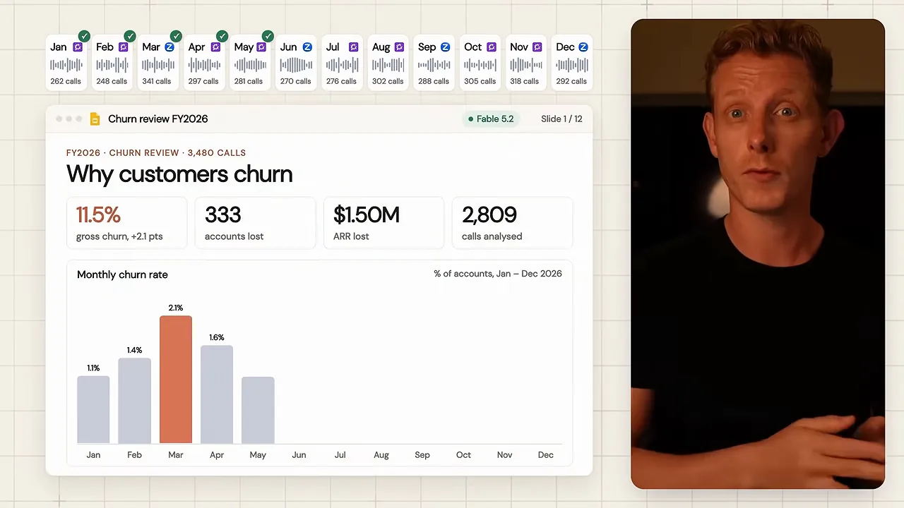
새 시장 심층 조사, 1년 치 데이터로 매출 동인 찾기, 회사 전체를 새 시스템이나 소프트웨어로 옮기는 계획도 같은 부류예요.
Fable은 가장 강한 오케스트레이터이기도 해요. 화면의 강조 부분이 그 실험이에요. Anthropic 엔지니어가 Fable 5.2에게 빈 폴더에서 시제품 운영체제를 설계하게 했어요. Fable은 서브에이전트 1,000개 이상을 8일 동안 밤낮으로 돌렸고, 노트북에서 부팅되는 운영체제가 나왔어요.
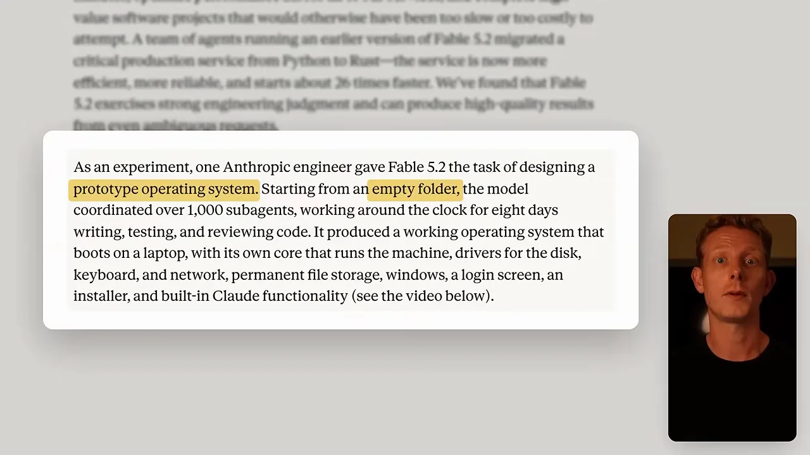
하지만 Fable은 토큰당 Opus의 두 배예요. 아래 두 카드가 가격표예요. 백만 토큰당 Fable 5.2는 입력 $8 / 출력 $40, Opus 5.5는 $4 / $20이에요. 같은 2시간짜리 에이전트 작업이면 $31.20과 $15.60이에요. Opus 카드 아래 '긴 작업 · 리팩터링 + 테스트'에 초록 체크가 있어요. 길고 어려운 일 상당수는 Opus에 노력을 더 주는 편이 더 남는 장사라는 뜻이에요.
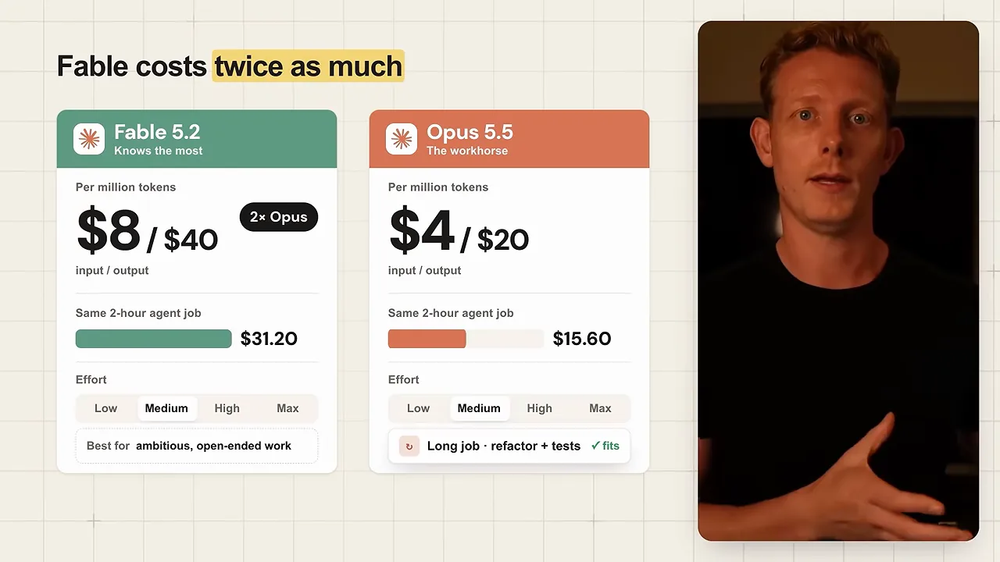
노력 단계는 질문 네 개로 고르기
노력은 Claude가 얼마나 똑똑한지가 아니라, 얼마나 시간과 품을 들이는지예요. 발표자는 이걸 '내가 얼마나 관여할지'를 정하는 다이얼로 보라고 해요. 그림의 다이얼 왼쪽 끝 low에서는 Claude가 차라리 돌아와서 물어보고, 오른쪽 high 쪽으로 갈수록 많은 결정을 대신 내려요. 오른쪽 Claude 아이콘 아래 '똑똑함이 아님(not how smart)'이라고 강조해 둔 것도 같은 말이에요.
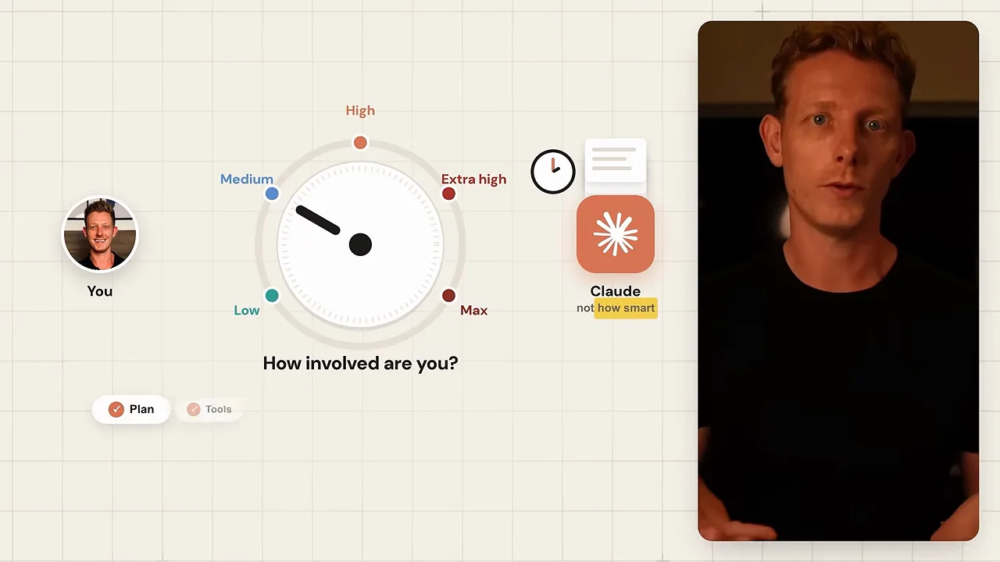
순서대로 묻고, 처음 '예'에서 멈춰요
고르는 방법은 질문 네 개예요. 순서가 중요해요. 위에서부터 물어서 처음 '예'가 나온 곳의 단계를 써요.
flowchart TB
Q1{"① 주고받을 일? 단순한 일?"} -- 예 --> L["low · 내가 매 단계 조종"]
Q1 -- 아니요 --> Q2{"② 숨은 실수가 비싼가?"}
Q2 -- 예 --> H["high · 다시 확인을 더 함"]
Q2 -- 아니요 --> Q3{"③ 길고·어렵고·중요한 일을 맡기고 떠나나?"}
Q3 -- "셋 다 예" --> X["xhigh부터 · 혼자 몇 시간씩"]
Q3 -- 아니요 --> M["medium · 기본값"]
- Claude와 주고받으며 할 일이거나 단순한 일인가요? → low — low는 나를 흐름 안에 두니까, 단계마다 반응하며 방향을 잡을 수 있어요. 발표자는 유튜브 영상을 준비할 때 계속 관여하고 싶어서 low를 써요.
- 숨은 실수가 돈, 고객, 잘못된 결정으로 이어지나요? → high — high에서 Claude는 더 많이 다시 확인해요. 발표자는 계약서를 검토할 때 high를 써요.
- 길고, 어렵고, 중요한 일을 맡기고 자리를 뜰 건가요? → extra high나 max — 셋 다 해당해야 해요. 이 단계에서는 Claude가 모든 결정을 혼자 내리고 몇 시간씩 돌 수 있거든요.
- 나머지 전부 → medium — 기본값이에요. Anthropic도 대부분의 작업에는 모델의 기본 노력 단계를 쓰라고 해요.
단순한 일은 노력을 올려도 안 나아져요
첫 번째 질문의 근거는 Anthropic의 실험이에요. 화면의 강조 부분을 보면 같은 간단한 재디자인 과제가 low에서 1분, max에서 28분 걸렸어요. 결과물 차이는 크지 않았다고 발표자는 말해요. 문서는 max 쪽이 실제 화면에 좀 더 가깝고 다듬어졌다고 적었지만, 피드백을 주며 고쳐 갈 거라면 low가 훨씬 빨리 도착한다고 해요.
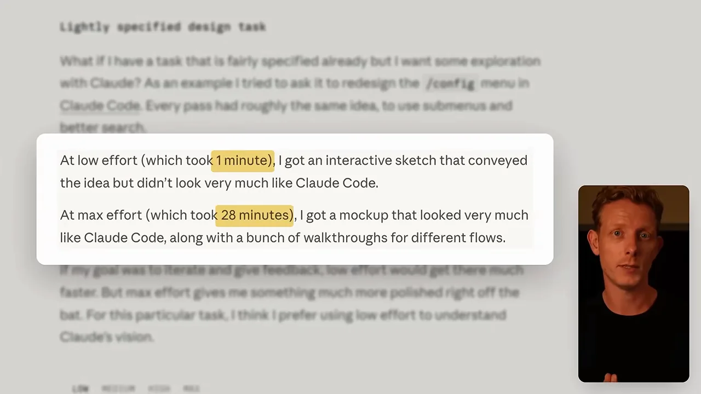
max는 비싸고, 생각이 과해질 수도 있어요
세 번째 질문에서 xhigh부터 시작하라는 이유는 공식 문서에 있어요. 화면은 Fable 5.2의 권장 노력 단계 문단이에요. 마지막 강조 부분이 'max는 xhigh보다 느리고 비싼데, 얻는 건 대개 작다'예요. 발표자는 여기에 max가 생각을 과하게 하기 시작할 수도 있다는 점을 덧붙여요.
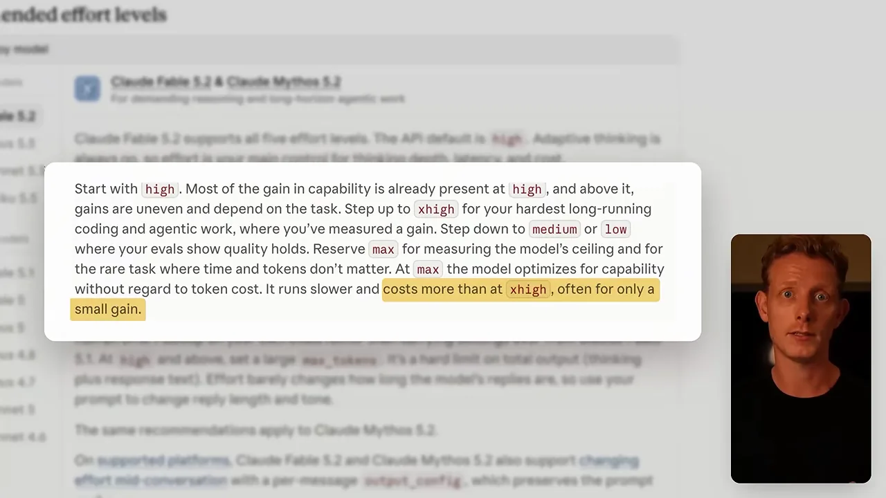
결과가 마음에 안 들 때 손대는 순서
엉뚱한 결과는 AI(Artificial Intelligence)와 일하면 늘 생겨요. 화면의 첫 장면도 '빗나가는 건 정상(A miss is normal)'이에요. 이때 다그치거나 모델과 노력을 이리저리 바꾸기 전에, 무엇을 바꿀지부터 정해야 해요.
발표자가 기준으로 삼는 건 Claude Code 팀 Lydia Hallie가 쓴 'Claude Code에서 모델과 노력 단계 고르기' 글이에요. 핵심 질문은 하나예요. "Claude가 몰랐나, 덜 애썼나?" 몰랐다면 더 큰 모델이, 단계를 건너뛰었다면 더 높은 노력이 필요해요.
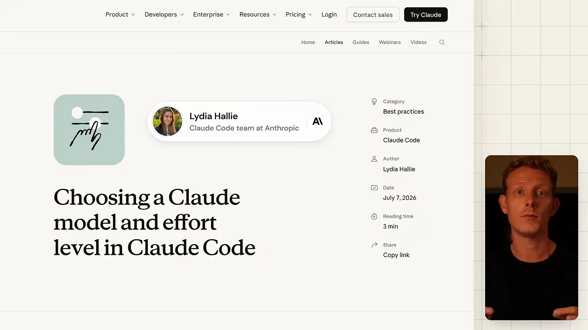
그다음은 Anthropic이 권한다는 4단계예요. 아래 그림은 Opus 5.5 medium에서 시작해 엉뚱한 결과를 받은 경우를 따라가요. 한 단계를 해 보고 안 될 때만 다음 단계로 올라가요.
① 처음 프롬프트부터 고쳐요
나쁜 프롬프트는 노력을 올려도 고쳐지지 않아요. 병목은 모델 능력보다 우리 전달력인 경우가 많아요. Claude Code에서 /rewind를 치거나 Esc를 두 번 누르면 앞의 프롬프트로 돌아가 고쳐 쓸 수 있어요. 여러 번 주고받은 뒤라도 그 지점부터 대화를 다시 시작하고, 그 뒤 Claude가 파일에 한 변경도 되돌릴 수 있어요.
아래 화면은 되감기로 첫 프롬프트를 고친 모습이에요. 맨 앞에 노랗게 칠한 '시니어 전환 디자이너처럼 행동해'라는 역할이 새로 들어갔어요. 그 아래 흐리게 보이는 줄들은 원래 대화예요. '더 고급스럽게, 히어로가 너무 바빠' 같은 고치기 요청이 이어지던 흐름이에요. 새 모델들은 강력해서, 엇나간 대화를 계속 고치는 것보다 이 편이 대개 빨라요.
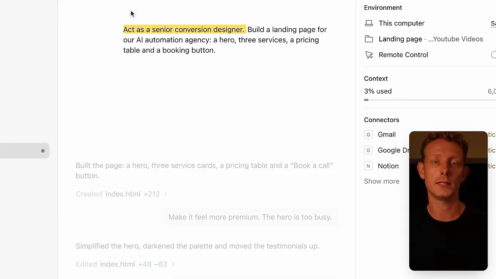
② Claude가 스스로 검증하게 해요
랜딩 페이지 디자인처럼 기대하는 결과가 주관적이면 프롬프트만으로는 부족할 수 있어요. 이때는 비교할 기준이나 '반드시 맞아야 할 것' 목록을 줘요. 그러면 Claude가 돌아오기 전에 스스로 실수를 잡아요.
화면 왼쪽이 Claude의 결과물, 오른쪽이 참고 디자인이에요. "참고 디자인과 비교해서 차이를 전부 나열해"라고 하면 Claude가 차이를 직접 찾고, 나도 어디서 어긋났는지 알게 돼요. 아래 검은 띠의 'MUST BE TRUE' 항목이 다른 방법이에요. 헤드라인 하나, 가격표, 예약 버튼처럼 짧은 체크리스트를 주는 거예요.
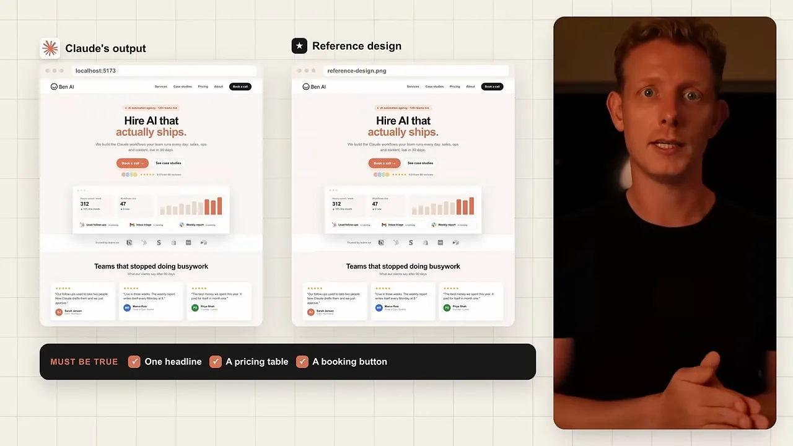
③ 노력을 한 칸, ④ 모델을 한 단계
1·2단계가 불가능하거나 해 봤는데도 부족할 때만 노력을 한 칸 올려요. Opus 5.5 medium이면 high로요. Anthropic 말로는 노력을 올리는 게 모델을 바꾸는 것보다 작은 걸음이에요.
그래도 안 되면 그때 모델을 올리는데, 노력은 낮춰요. 아래 화면 왼쪽 Opus 5.5 카드는 High에 점이 찍혀 있고 '부족함(Falls short)'이에요. 오른쪽 Fable 5.2 카드는 점이 Med에 있어요. high를 넘어서면 노력 한 칸이 더 큰 모델만큼 비쌀 수 있어서, 다음 모델은 앞 모델보다 낮은 노력에서 시작해요.
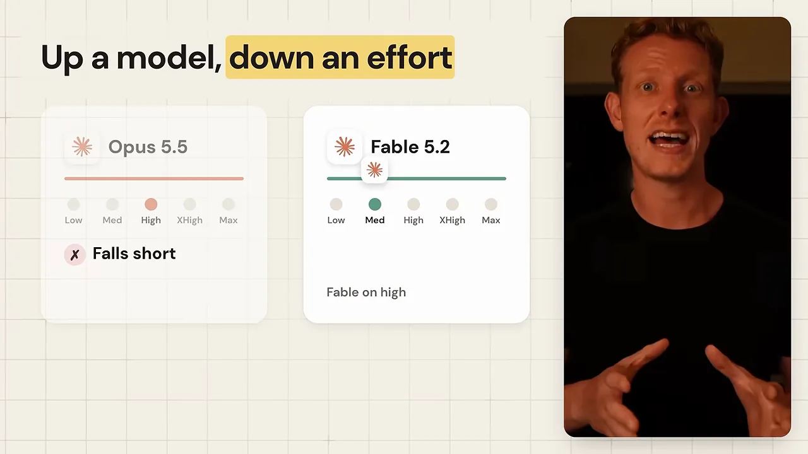
왜 대화 중간에 모델을 바꾸면 안 될까요?
4단계에서 모델을 올리더라도 같은 대화에서 바로 바꾸지 말라는 게 발표자의 팁이에요. 먼저 지금 대화에서 Claude에게 핸드오프 프롬프트를 받아요. 할 일, 한 일, 다음 할 일을 짧게 정리한 글이에요. 화면의 요청이 바로 그거예요. "새 대화용 핸드오프 프롬프트를 써 줘: 과제, 한 일, 다음 할 일."
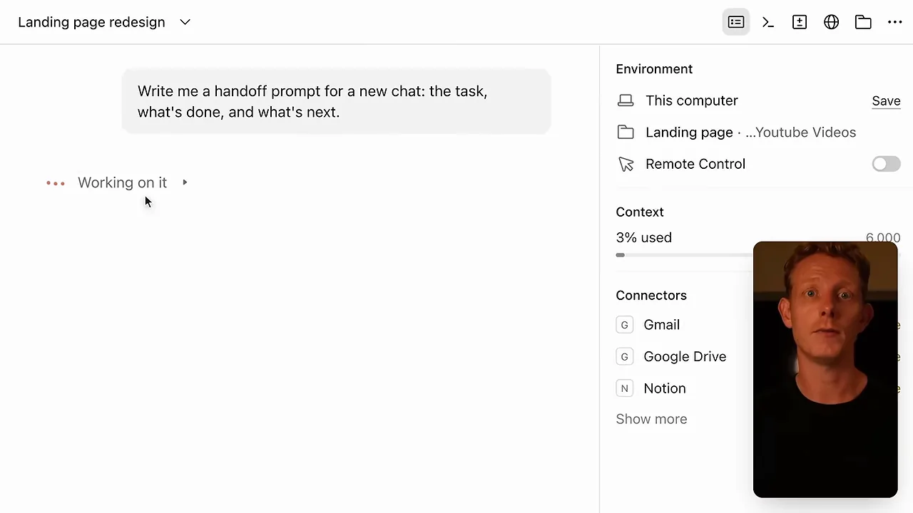
대화 중간에 모델을 바꾸면 돈도 성능도 잃을 수 있어요. 이유는 두 가지예요.
이유 1: 캐시는 한 모델에만 속해요
메시지를 보낼 때마다 Claude는 대화 전체를 다시 읽어요. 이걸 싸게 하려고 Anthropic 서버에 대화 사본을 저장해 둬요. 이게 캐시예요. 아래 화면 위쪽에서 왼쪽 'Landing page' 대화(Opus 5.5, 12개 메시지)가 오른쪽 Anthropic 서버에 'Opus 5.5 전용' 사본으로 저장돼 있어요. 아래 두 막대가 비용이에요. 처음부터 다시 읽으면 $1.00, 같은 모델로 캐시에서 읽으면 $0.10이에요.
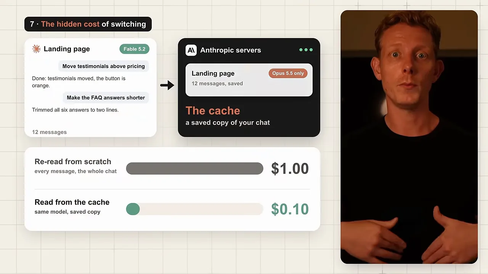
모델을 Fable 5.2로 바꾸는 순간 그 사본은 쓸 수 없어요. 다음 화면에서 서버의 사본에 '잘못된 모델(WRONG MODEL)' 도장이 찍혀 있어요. 새 모델의 첫 메시지는 대화 전체를 제값 내고 다시 읽어야 해요. 대화가 길수록 더 비싸요. 메시지가 40개로 늘어난 아래 막대는 $3.40이에요.
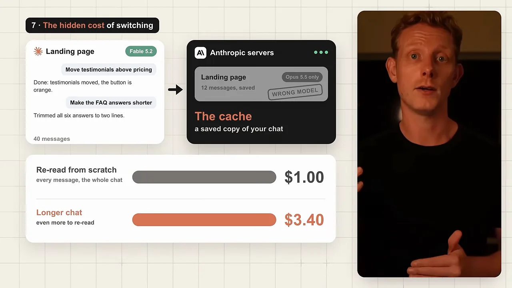
이유 2: 작은 모델로 내려가면 생각을 잃어요
Claude는 답하기 전에 스스로에게 메모를 써요. 이게 사고 블록이에요. 그런데 작은 모델은 큰 모델의 메모를 읽지 못해요. 아래 공식 문서 문단 첫 줄이 그 규칙이에요. Sonnet 5.5는 Haiku 5.5의 것을, Fable 5.2는 Opus 5.5·Sonnet 5.5·Haiku 5.5의 것을 읽어요. 거꾸로는 안 돼요. 둘째 문단은 '한 단계 아래로 옮기면 앞의 추론을 잃는다'고 해요. 모델은 위 모델의 블록을 읽지 못해서, API가 그걸 빼고 요청을 처리해요.
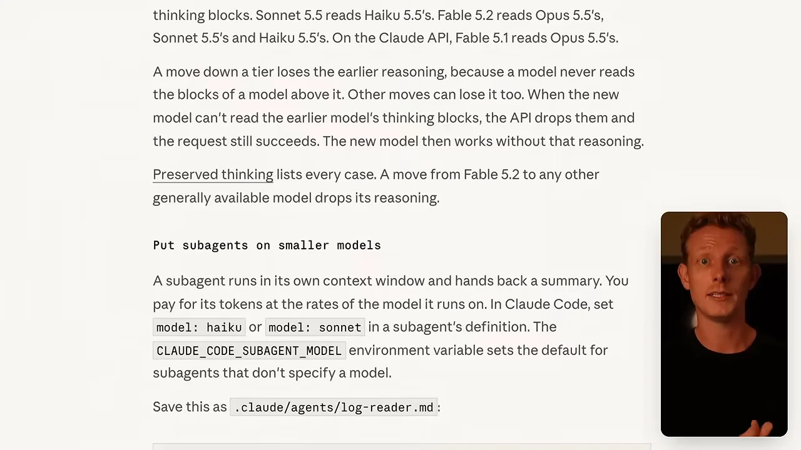
그래서 핸드오프가 또 필요해요. 큰 모델이 정리해 준 글이 있으면, 작은 모델도 앞 모델이 멈춘 곳에서 바로 이어 갈 수 있어요.